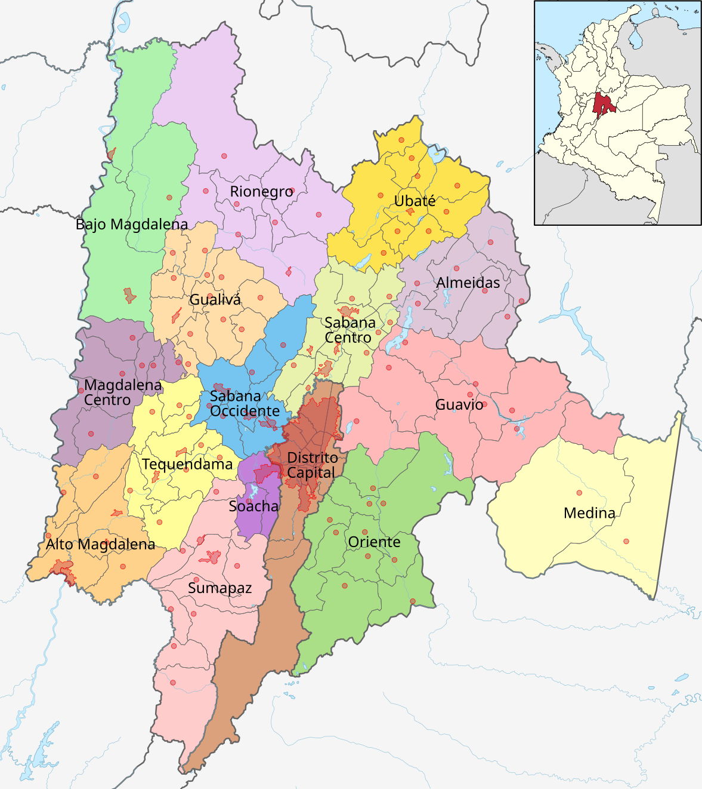
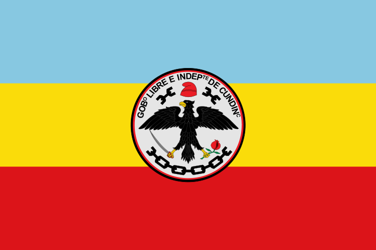
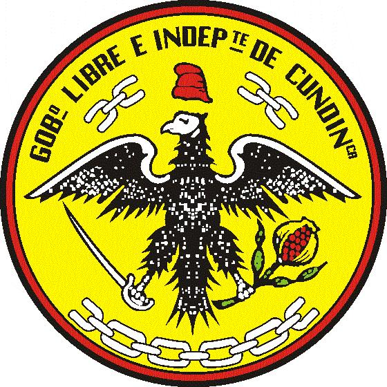

Departamento de Cundinamarca

Simbolos
Himno de Cundinamarca
CORO
Con acento febril entonemos
de esta tierra su himno triunfal
y a tu historia gloriosa cantemos
para nunca tu nombre olvidar. (Bis)
ESTROFA I
Fuiste asiento de tribus heroicas,
Cundinamarca, patria sin igual,
que labraron altivas tus rocas
y forjaron tu sino inmortal. (Bis)
ESTROFA II
En tus campos hay sol y esperanza;
son emporio de rica heredad,
a Colombia das hombres de gracia
que le cubren de fe y dignidad. (Bis)
Bandera

Escudo
